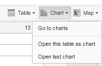
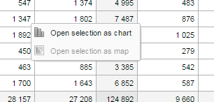

When you have made a pivot table you can switch between pivot table, chart and map visualization of your data.
Click Chart > Open this table as chart.
Your current pivot table opens as a chart.
|  |
If you want to visualize a small part of your pivot table as a chart you can click directly on a value in the table instead opening the whole table.
In the pivot table, click a value.
|  |
To verify the selection, hold the cursor over Open selection as chart. The highlighted dimension headers in the table indicate what data will be visualized as a chart.
Click Open selection as chart.
Click Chart > Open this table as map
Your current pivot table opens as a map.